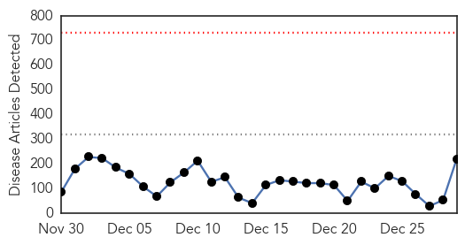
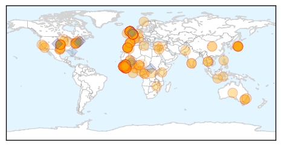
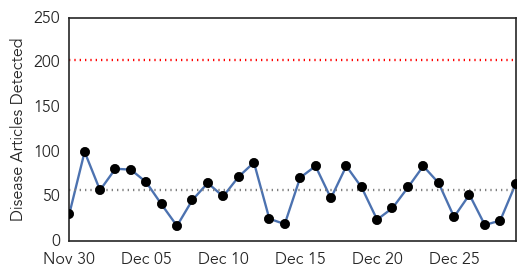

Ebola
30-Day Web Trend
0 alerts, 0 warnings

30-Day Twitter Trend
0 alerts, 0 warnings

Article Locations
Article Confidences

Top Articles:
- 1.000
- More Ebola cases expected in UK says chief medical officer Sally Davies
- 1.000
- Ebola Devastates W. Africa, Horrifies World in 2014
- 1.000
- Christmas just another day for those fighting Ebola in West Africa, says UN staffer
- 1.000
- 'People afraid of going to hospital' in Ebola-hit W Africa
- 1.000
- Another British health worker from Sierra Leone is Ebola positive
- 1.000
- The ethical questions raised by Ebola this year · TheJournal.ie
- 1.000
- Scottish Ebola patient transferred to London hospital
- 1.000
- The Scientist Magazine®
- 1.000
- British nurse becomes first in UK to be diagnosed with Ebola
- 1.000
- What Psychiatrists Should Know About Ebola
- 1.000
- Ebola in UK: healthcare worker diagnosed with disease
- 1.000
- First Ebola case confirmed in Scotland
- 1.000
- Ebola in the UK: Woman diagnosed with the virus in Glasgow Gartnavel Hospital
- 1.000
- Ebola in Glasgow: Britain likely to face more cases of deadly virus but is 'well prepared', says Chief Medical Officer
- 1.000
- Glasgow Aid Worker Case Confirmed After Return From Sierra Leone
- 1.000
- Dozens Of New Cases Reported Near Sierra Leone Border, Official Says
- 1.000
- Homeland Security News Wire
- 1.000
- US Ebola czar: Fight against deadly disease reaching 'pivot point,' but more domestic cases expected
- 1.000
- Ebola: Q&A What you need to know
- 1.000
- Ebola response
- 1.000
- 'Shambolic' Ebola screening revealed as SECOND patient arrives at Aberdeen hospital
- 1.000
- 'Shambolic' Ebola screening revealed as SECOND patient arrives at Aberdeen hospital
- 1.000
- Dozens more Ebola cases erupt on Liberia's border with Sierra Leone
- 1.000
- Experts: 2014 was a busy, black-eye year for disease control
- 1.000
- Ebola infects health worker returning to Scotland
- 1.000
- Experts: A black-eye year for disease control
- 1.000
- Suspected Ebola Patient Hospitalized in Tokyo
- 1.000
- Case confirmed in Glasgow — RT UK
- 1.000
- How Will Britain Stop Ebola From Spreading?
- 1.000
- The Durango Herald 12/28/2014
- 0.999
- Scottish government confirms Ebola case in Glasgow
- 0.999
- The Pricey and Lasting Lessons of Ebola
- 0.999
- Healthcare Worker in UK Diagnosed with Ebola
- 0.999
- Liberia Sees Surge in New Ebola Cases in Border County
- 0.999
- Malaria Claiming More Lives Than Ebola in West Africa
- 0.999
- Roche Ebola test gets emergency OK from U.S. regulators
- 0.999
- Scotland Announces First Ever Ebola Case After A Health Worker Was Confirmed To Acquire The Virus
- 0.999
- Why Glasgow Ebola Case is Very Unlikely to Spread
- 0.999
- Glasgow Hospital Treating Patient For Ebola
- 0.999
- Ebola Case Confirmed In Scotland
- 0.999
- Scottish Ebola nurse named as Pauline Cafferkey
- 0.999
- U.S. CDC issues new Ebola threat alert
- 0.999
- Malaria killing thousands more than Ebola in West Africa
- 0.999
- Ebola – epidemic could last to end of 2015, says scientist
- 0.999
- Ebola outbreak in Liberia remains intense 49 new cases in December
- 0.999
- US watchdog approves Roche’s Ebola test for emergency use
- 0.999
- Why Glasgow Ebola case is very unlikely to spread
- 0.998
- Nurse brings Ebola home to Scotland
- 0.998
- Confirmed case of Ebola diagnosed in Glasgow
- 0.998
- Confirmed case of Ebola diagnosed in Glasgow
Showing top 50 articles...
Top Tweets:
- 0.977
- RT: Ebola Cases Reach Over 20,000: http://t.co/LKooB8ALrd EbolaOutbreak Ebola ebolamustgo Liberia SierraLeone guinea af…
- 0.961
- British healthcare worker returning from Sierra Leone has Ebola. UK has already treated 1 Ebola patient - Wm Pooley. http://t.co/wzTMalS5OK
- 0.857
- Number of people infected by Ebola in Sierra Leone, Liberia and Guinea passes 20,000, WHO reports -... http://t.co/KTaHVt8XA1
- 0.833
- AFD Blog `@WHO: Ebola Cases Top 20,000 In West Africa' http://t.co/VacgxE3fEu
- 0.824
- RT: For a fleeting moment last spring, the Ebola epidemic sweeping West Africa might have been stopped. http://t.co/MTFyE5Qg…
- 0.762
- Most of our [medics] are working in the diaspora. Sierra Leone dr. on a health system that "had nothing good to write home about"Ebola
- 0.760
- RT: The White House Ebola czar warns that the virus is still a grave threat to global health http://t.co/IAtYp5r3zg
- 0.759
- Malaria killing thousands more than Ebola in West Africa http://t.co/y8KqwRs92b
- 0.759
- Malaria killing thousands more than Ebola in West Africa http://t.co/qPMyuQK9j3
- 0.728
- Ebola case confirmed in Glasgow hospital http://t.co/U8pgslU3il
- 0.692
- Ebola Cases Reach Over 20,000 http://t.co/bVte9Alrkj
- 0.687
- Ebola Orphans Challenge West African Culture http://t.co/Gt5mFEKjvn
- 0.670
- RT: Malaria kills more people than Ebola in West Africa > slowing progress in the fight says Dr Bernard Nahlen h…
- 0.660
- CDC worker possibly exposed to Ebola in mishap shows no signs of disease: U.S. official http://t.co/QOnNyWFntH
- 0.656
- .@WHO updated Ebola numbers put the total for the 3 main countries over 20,000 with deaths at 7842. Unbelievable. http://t.co/G7iaeOLur4
- 0.622
- RT: BREAKING: A patient is being treated for Ebola in Glasgow, UK, a health service spokesperson confirms.
- 0.619
- RT: The Scottish government confirms a case of Ebola in a patient at Gartnavel Hospital in Glasgow http://t.co/5nXqXn9UQc
- 0.616
- Confirmed ebola case in Glasgow healthcare worker from SierraLeone
- 0.590
- Ebola cases cross 20,000 http://t.co/9GW8Z4zrLl via
- 0.587
- A History of Ebola in 24 Outbreaks http://t.co/Ee7PhRDb0S
- 0.580
- RT: Ebola also kills indirectly by collapsing health services and economies, as shown by drop of surgery in SierraLeone: http…
- 0.571
- RT: Ebola Toll Passes 20,000 Cases http://t.co/dmqp35wFlB
- 0.568
- RT: Ebola case confirmed in Scotland hospital http://t.co/XC5pnYtSOo
Unknown
30-Day Web Trend
0 alerts, 0 warnings

30-Day Twitter Trend
0 alerts, 0 warnings

Article Locations

Article Confidences
Top Articles:
- 0.997
- Bad flu season could be result of less effective vaccine
- 0.989
- Number of Shigellosis Infections Among San Francisco’s Homeless People on the Rise
- 0.979
- Grand Junction VA closes community living center amid flu outbreak
- 0.978
- Man dies of avian flu in China; HK on alert
- 0.977
- Despite pleas to stay home, Montrealers flood emergency rooms as the flu arrives early
- 0.977
- HK on alert for H7N9 avian flu virus- China.org.cn
- 0.971
- She got sick with the flu on her 37th birthday, and after Christmas, she was dead
- 0.969
- Japan Culls 42,000 Chickens After Second Bird Flu Outbreak In A Month
- 0.945
- Pediatric flu deaths in Tenn. double from last year, Knoxville doctors offer advice
- 0.942
- Signs and Symptoms of Pneumonia
- 0.937
- China bird flu death reported
- 0.937
- First Case of Deadly Avian Flu in Hong Kong
- 0.934
- Hong Kong Raises Bird Flu Alert Level as Woman Critical
- 0.933
- China bird flu death reported as 2014 toll rises
- 0.931
- Hong Kong raises bird flu alert level as woman critical
- 0.930
- China bird flu death reported as 2014 toll rises, East Asia News & Top Stories
- 0.926
- Flu in Washington County
- 0.917
- Chicago Tribune
- 0.917
- Chicago Tribune
- 0.917
- Chicago Tribune
- 0.917
- Chicago Tribune
- 0.917
- Chicago Tribune
- 0.917
- Chicago Tribune
- 0.917
- Chicago Tribune
- 0.917
- Chicago Tribune
- 0.917
- Chicago Tribune
- 0.917
- Chicago Tribune
- 0.917
- Chicago Tribune
- 0.917
- Chicago Tribune
- 0.917
- Chicago Tribune
- 0.917
- Chicago Tribune
- 0.917
- Chicago Tribune
- 0.917
- Chicago Tribune
- 0.910
- The world windows to Thailand
- 0.884
- Man dies in Yongkang of H7N9 bird flu
- 0.883
- KRNV, Reno, NV
- 0.883
- KRNV, Reno, NV
- 0.880
- 201 Cambodians infected with HIV
- 0.877
- 201 villagers infected with HIV in northwest Cambodia
- 0.875
- 201 Cambodians infected with HIV
- 0.866
- Libya contracts U.S. firm to extinguish port storage tanks fire
- 0.862
- NewsDaily
- 0.862
- NewsDaily
- 0.862
- NewsDaily
- 0.854
- Developments in AirAsia tragedy
- 0.854
- Afghan war, longest for US, ending
- 0.825
- RSV season underway with more illnesses than last year
- 0.819
- Lyme disease debate leaves stricken family without answers
- 0.811
- West Suffolk Hospital brings in extra staff after ‘very busy’ Christmas is worsened by norovirus outbreak
- 0.788
- Poultry producers brace for bird flu fallout
Showing top 50 articles...
Top Tweets:
- 0.741
- RT: Qasim: 3 Northern borders: 2 Bahar: 1 Jizan & Ha'il: 0 Only includes SaudiArabia MERS CoV cases. 2/2
- 0.617
- Schumacher progresa "adecuadamente" dentro de la gravedad: Justo el día en el que se cumple un año del grave... http://t.co/t3FdN8MfPJ
- 0.531
- Platini sin oposición en la UEFA y será reelecto en marzo del 2015: Hasta el momento sólo se ha anunciado un... http://t.co/GYKrCsYobB
- 0.529
- navidad en el tropico üêö‚òÄÔ∏èüåäüëôüëì
- 0.515
- Do we know how many H7N9 flu cases there have been? @WHO tallies H5N1 (676 cases, 398 deaths as of Dec 4) but never see H7 tally. Why?